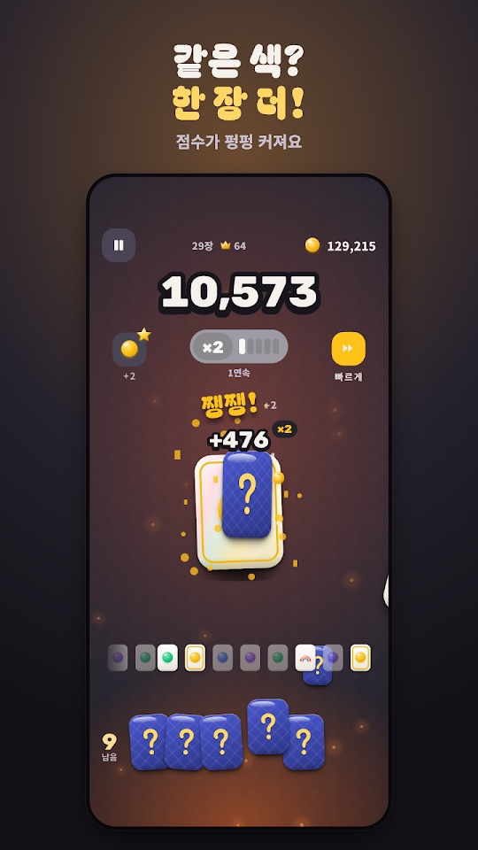
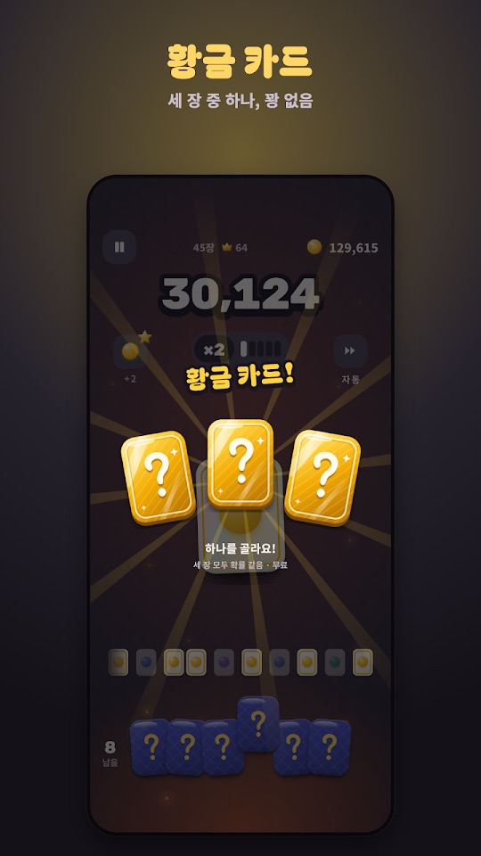
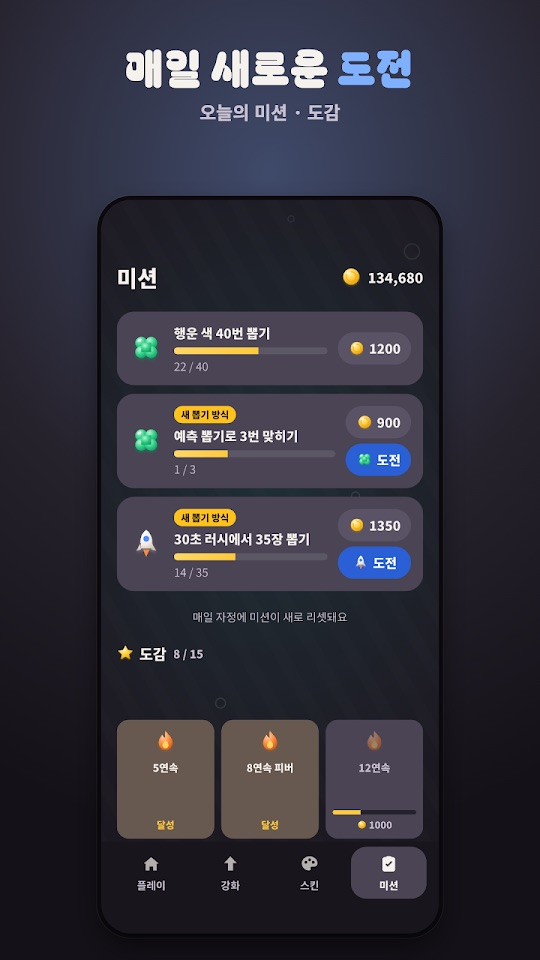
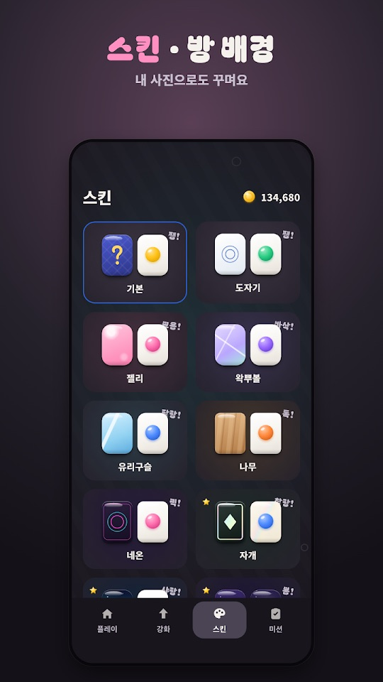

카드를 위로 쭉 올려 뒤집는 한 손 캐주얼 게임입니다. 방금 나온 카드와 같은 색이 나오면 기회를 돌려받고, 꽝 없이 이어질수록 배율이 쌓여 점수가 커집니다.
게임의 기본 흐름
- 남은 기회 수만큼 카드를 뽑습니다. 화면 왼쪽 아래에 남은 기회가 표시됩니다.
- 방금 나온 카드와 같은 색이면 기회가 1 늘고, 행운 색이면 2 늘며, 무지개 카드는 무조건 이어집니다.
- 연속이 길어질수록 배율(예: ×2)이 커지고 점수가 크게 오릅니다. 큰 숫자를 넘을 때마다 연출이 터집니다.
- 모은 코인으로 강화하고, 점수 해금 사다리와 도감으로 스킨과 방 배경을 엽니다.
조작과 모드
- 뽑기: 카드를 위로 올려서 뽑습니다. 누르고 있으면 연속으로 뽑고, 자동·빠르게 버튼도 있습니다.
- 한 장씩: 같은 색을 이어 가며 점수를 키우는 기본 모드입니다.
- 한꺼번에: 카드를 와르르 펼치고 같은 색 짝을 맞춥니다.
- 오늘의 도전: 매일 바뀌는 규칙으로 하루 3번 할 수 있습니다.
- 아래쪽 탭: 플레이·강화·스킨·미션.
처음 시작하기
- 아래 Google Play 링크에서 설치합니다. 회원가입 없이 바로 시작합니다.
- 한 장씩 모드에서 카드를 위로 올려 뽑아 보며 같은 색이 나올 때 기회가 늘어나는 것을 확인합니다.
- 황금 카드가 나오면 세 장 중 하나를 고릅니다(꽝 없음).
- 판이 끝나면 강화 탭에서 코인으로 시작 기회나 행운 확률 등을 올립니다.
- 미션 탭에서 오늘의 미션을 확인합니다. 미션은 매일 자정에 새로 바뀝니다.
초보자를 위한 참고 팁
아래는 스토어 설명과 화면 안내를 바탕으로 한 제안입니다. 카드 결과는 운에 따라 달라집니다.
- 시작 기회부터 강화해 보세요. 강화 항목에는 시작 기회, 행운 확률, 무지개, 코인 배율, 불씨, 색 줄이기, 연속 지킴이가 있습니다. 판이 짧게 끝난다면 기회를 늘리는 쪽이 체감이 큽니다.
- 미션은 코인 수입원입니다. 예측 뽑기, 30초 러시 같은 새 뽑기 방식 미션은 보상이 붙어 있으니 하루에 한 번 확인하세요.
- 연타 구간은 놓치지 마세요. 피버 연타와 보너스 연타는 두드린 만큼 코인을 줍니다.
- 빠르게·자동은 손이 바쁠 때. 손맛을 즐기고 싶다면 직접 올려 뽑고, 기록을 빨리 돌리고 싶다면 빠르게나 자동을 쓰세요.
- 스킨마다 소리가 다릅니다. 마음에 드는 손맛을 찾으려면 스킨을 바꿔 보세요. 방 배경은 내 사진으로도 꾸밀 수 있습니다.
스크린샷
Google Play 한국 스토어에 게시된 공식 홍보용 스크린샷입니다(2026년 10월 16일 업데이트 기준 페이지, 홍보 문구 포함).




자주 묻는 질문
- 광고를 없앨 수 있나요?
- 앱에는 광고가 포함되어 있으며, 스토어 설명에 따르면 판 사이 광고는 ‘광고 제거’ 구매로 없앨 수 있습니다.
- 코인을 현금이나 경품으로 바꿀 수 있나요?
- 아닙니다. 게임 안 코인은 현금이나 경품으로 바꿀 수 없다고 스토어 설명에 적혀 있습니다.
- 기록은 어디에 저장되나요?
- 기록과 코인은 휴대폰 안에만 저장됩니다. 스토어 설명에는 계정 연동이나 기기 간 이전 기능이 적혀 있지 않습니다.
- 아이폰에서도 할 수 있나요?
- 이 페이지를 확인한 시점에 공식 링크가 있는 스토어는 Google Play뿐입니다.
- 버그는 어떻게 알리나요?
- 화면 녹화나 캡처를 ricecookey.help@gmail.com으로 보내 주세요. 기기 모델과 앱 버전을 함께 적어 주시면 확인이 빠릅니다.
스토어 링크
무료 게임(광고·인앱 구매 포함)
Google Play 표시: 광고 포함, 인앱 구매. 최근 업데이트(2026년 10월 16일)는 출석 한정 선물 알림과 앱 안 새 버전 안내를 추가했습니다.
문의
질문, 요청, 버그 제보: ricecookey.help@gmail.com
참고 자료와 확인 범위
- Google Play 페이지 — 2026년 10월 16일 업데이트, 설명·업데이트 내용·스크린샷
조작, 모드, 메뉴 이름은 2026년 10월 20일에 확인한 스토어 설명과 공식 스크린샷 문구를 따랐습니다. 업데이트로 달라질 수 있으며, 게임 안의 표시가 이 페이지보다 우선합니다.
English
PopPop is a one-thumb casual game where you flick cards upward to flip them. Draw the same color as the last card and you get the chance back; the longer the streak goes without a miss, the bigger the multiplier and the score.
How it works
- Draw cards for as many chances as you have left. The remaining count is shown at the bottom left.
- The same color as the last card gives +1 chance, a lucky color gives +2, and a rainbow card always continues the streak.
- Longer streaks raise the multiplier (for example ×2) and the score grows quickly, with a burst of effects at big milestones.
- Spend coins on upgrades, and unlock skins and room backgrounds through the score ladder and the collection.
Controls and modes
- Draw: swipe a card upward. Hold to draw continuously; there are also Auto and Fast buttons.
- One at a time: the basic mode, building score by chaining the same color.
- All at once: spread the cards out and match same-color pairs.
- Daily challenge: a rule that changes every day, playable three times a day.
- Bottom tabs: Play, Upgrade, Skins and Missions (플레이·강화·스킨·미션).
Getting started
- Install from the Google Play link below. No sign-up is needed.
- In One at a time, flick cards up and watch your chances grow when colors match.
- When a golden card appears, pick one of three (no blanks).
- After a run, use coins in the Upgrade tab to raise starting chances, lucky odds and more.
- Check today's missions in the Missions tab. They reset every day at midnight.
Beginner tips
These suggestions are based on the store description and on-screen text. Card results depend on luck.
- Try upgrading starting chances first. Upgrades include starting chances, lucky odds, rainbow, coin multiplier, ember, fewer colors and streak keeper. If runs end quickly, more chances make the biggest difference.
- Missions are a coin source. New draw-style missions such as prediction draws and the 30-second rush carry rewards, so check them once a day.
- Don't miss tap bursts. Fever taps and bonus taps pay coins for every tap.
- Use Fast or Auto when your hands are busy. Flick by hand for the feel, or use Fast or Auto to play through quickly.
- Each skin sounds different. Switch skins to find the feel you like. Room backgrounds can use your own photo.
Screenshots
Official promotional screenshots from the Korean Google Play listing (page as of the October 16, 2026 update, with marketing captions in Korean).
FAQ
- Can I remove ads?
- The app contains ads, and the store description says ads between runs can be removed with the Remove Ads purchase.
- Can coins be exchanged for cash or prizes?
- No. The store description says in-game coins cannot be exchanged for cash or prizes.
- Where is my progress saved?
- Records and coins are stored only on the phone. The store description does not mention account sync or moving progress between devices.
- Is it on iPhone?
- When this page was checked, Google Play was the only store with an official link.
- How do I report a bug?
- Send a screen recording or screenshot to ricecookey.help@gmail.com. Including your device model and app version speeds things up.
Store links
Free game (ads and in-app purchases)
Google Play shows: Contains ads, In-app purchases. The latest update (October 16, 2026) added attendance gift reminders and in-app update notices.
Contact
Questions, requests and bug reports: ricecookey.help@gmail.com
References and scope
- Google Play listing — updated October 16, 2026; description, release notes and screenshots
Controls, modes and menu names follow the store description and official screenshot text checked on October 20, 2026. Updates may change them, and what the game shows takes precedence over this page.